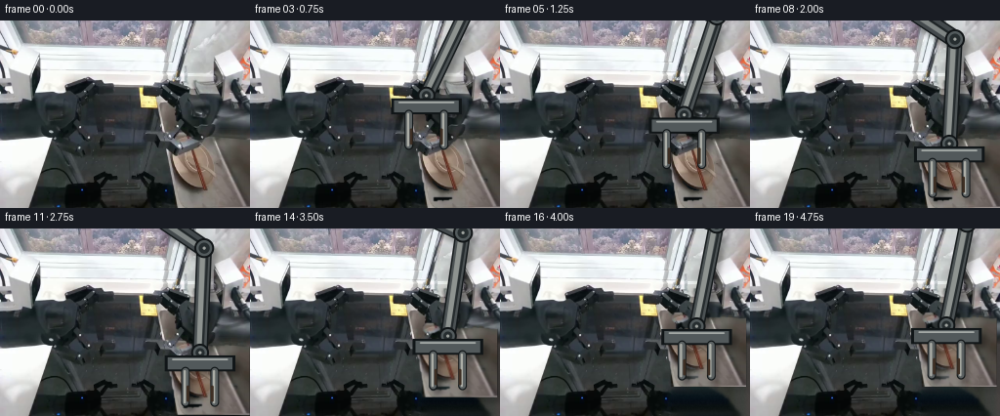
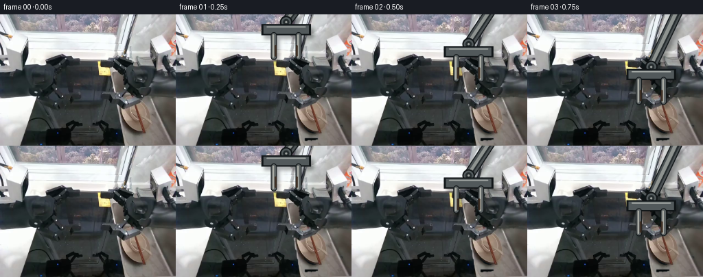
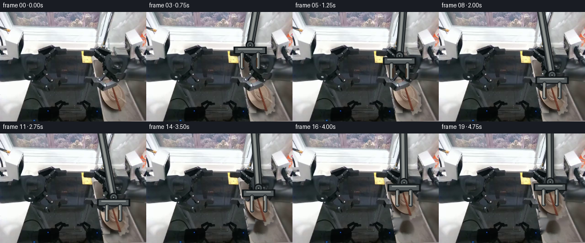
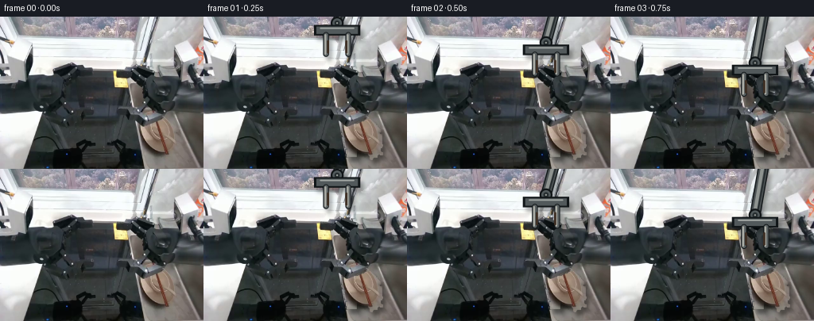

CODING AGENTS AS PIXEL WORLD MODELS
traex/DeepSeek-V4.1-Flash · common50_0004
点击播放 · 原生 RGB 像素
逐轮保存的候选
回放视频、检查图与代码变化。
每份候选均可单独播放。实际图片检查记录在下方工具轨迹中。
候选 01播放与检查图
点击播放 · 原生 RGB 像素


展开代码变化
--- 上一保存版本
+++ 本次保存版本
@@ -0,0 +1,314 @@
+from pathlib import Path
+
+import cv2
+import numpy as np
+from PIL import Image
+
+import artifact_io
+
+
+CASE_DIR = Path(__file__).resolve().parent
+W, H, N, FPS = 256, 192, 20, 4
+
+
+def smoothstep(x):
+ x = np.clip(x, 0.0, 1.0)
+ return x * x * (3.0 - 2.0 * x)
+
+
+def ease_between(t, a, b):
+ return smoothstep((t - a) / max(b - a, 1e-6))
+
+
+def lerp(a, b, u):
+ return np.asarray(a, np.float32) * (1.0 - u) + np.asarray(b, np.float32) * u
+
+
+def premultiplied_resize(rgba, size, interpolation=cv2.INTER_LINEAR):
+ rgb = rgba[..., :3].astype(np.float32)
+ alpha = rgba[..., 3].astype(np.float32) / 255.0
+ premul = np.dstack((rgb * alpha[..., None], alpha * 255.0))
+ small = cv2.resize(premul, size, interpolation=interpolation)
+ a = np.clip(small[..., 3], 0.0, 255.0)
+ out = np.zeros_like(small)
+ out[..., :3] = np.divide(
+ small[..., :3],
+ np.maximum(a[..., None] / 255.0, 1e-5),
+ out=np.zeros_like(small[..., :3]),
+ where=(a[..., None] > 0.0),
+ )
+ out[..., 3] = a
+ return np.clip(out, 0.0, 255.0).astype(np.uint8)
+
+
+def warp_rgba(rgba, dx, dy, angle=0.0):
+ h, w = rgba.shape[:2]
+ center = (w * 0.5, h * 0.5)
+ matrix = cv2.getRotationMatrix2D(center, angle, 1.0)
+ matrix[0, 2] += dx
+ matrix[1, 2] += dy
+ return cv2.warpAffine(
+ rgba,
+ matrix,
+ (w, h),
+ flags=cv2.INTER_LINEAR,
+ borderMode=cv2.BORDER_CONSTANT,
+ borderValue=(0, 0, 0, 0),
+ )
+
+
+def composite_rgba(background, rgba, shadow_offset=(0, 0), shadow_strength=0.0):
+ rgb = rgba[..., :3].astype(np.float32)
+ alpha = rgba[..., 3].astype(np.float32) / 255.0
+ out = background.astype(np.float32)
+
+ if shadow_strength > 0.0:
+ shadow = np.zeros((H, W), np.float32)
+ sx, sy = shadow_offset
+ source = alpha
+ x0, x1 = max(0, sx), min(W, W + sx)
+ y0, y1 = max(0, sy), min(H, H + sy)
+ shadow[y0:y1, x0:x1] = source[max(0, -sy):min(H, H - sy), max(0, -sx):min(W, W - sx)]
+ shadow = cv2.GaussianBlur(shadow, (0, 0), 2.6)
+ out *= (1.0 - shadow_strength * shadow[..., None])
+
+ out = rgb * alpha[..., None] + out * (1.0 - alpha[..., None])
+ return np.clip(out, 0.0, 255.0).astype(np.uint8)
+
+
+def build_object_layer(frame):
+ rgb = frame.astype(np.int16)
+ r, g, b = rgb[..., 0], rgb[..., 1], rgb[..., 2]
+ yy, xx = np.indices((H, W))
+
+ region = (xx >= 163) & (yy >= 116)
+ warm = (r - b >= 7) & (r >= 62) & (r >= g - 7)
+ chopsticks = (xx >= 164) & (xx <= 184) & (yy >= 126) & (r > b + 2) & (r >= g - 2)
+ right_edge = (xx >= 226) & (yy >= 122) & (r > b + 4) & (r >= 55)
+ mask = region & (warm | chopsticks | right_edge)
+
+ mask_u8 = (mask.astype(np.uint8) * 255)
+ mask_u8 = cv2.morphologyEx(mask_u8, cv2.MORPH_CLOSE, np.ones((3, 3), np.uint8))
+ mask_u8 = cv2.morphologyEx(mask_u8, cv2.MORPH_OPEN, np.ones((2, 2), np.uint8))
+
+ count, labels, stats, _ = cv2.connectedComponentsWithStats(mask_u8, 8)
+ kept = np.zeros_like(mask_u8)
+ for index in range(1, count):
+ if stats[index, cv2.CC_STAT_AREA] >= 12:
+ kept[labels == index] = 255
+
+ # A very small dilation restores the antialiased object boundary while the
+ # source pixels themselves provide the texture.
+ kept = cv2.dilate(kept, np.ones((3, 3), np.uint8), iterations=1)
+ alpha = cv2.GaussianBlur(kept.astype(np.float32) / 255.0, (0, 0), 0.65)
+ alpha = np.clip((alpha - 0.05) / 0.90, 0.0, 1.0)
+
+ rgba = np.dstack((frame, (alpha * 255.0).astype(np.uint8)))
+ return rgba, (kept > 0).astype(np.uint8)
+
+
+def make_clean_plate(frame, object_mask):
+ mask = cv2.dilate(object_mask * 255, np.ones((5, 5), np.uint8), iterations=1)
+ clean = cv2.inpaint(frame, mask, 7.0, cv2.INPAINT_NS)
+
+ # Add back the gentle stainless-steel grain that broad inpainting removes.
+ rng = np.random.default_rng(4)
+ noise = rng.normal(0.0, 1.35, (H, W)).astype(np.float32)
+ noise = cv2.GaussianBlur(noise, (0, 0), 0.55)
+ grain = np.repeat(noise[..., None], 3, axis=2)
+ grain[..., 2] *= 1.10
+ blend = cv2.GaussianBlur(mask.astype(np.float32) / 255.0, (0, 0), 1.0)
+ clean = clean.astype(np.float32) + grain * blend[..., None]
+
+ # Preserve a darker lower basin wall, matching the surrounding geometry.
+ yy = np.arange(H, dtype=np.float32)[:, None, None]
+ vertical = np.clip((yy - 140.0) / 52.0, 0.0, 1.0)
+ clean *= 1.0 - 0.045 * vertical * blend[..., None]
+ return np.clip(clean, 0.0, 255.0).astype(np.uint8)
+
+
+def solve_elbow(shoulder, wrist, upper, forearm):
+ shoulder = np.asarray(shoulder, np.float32)
+ wrist = np.asarray(wrist, np.float32)
+ delta = wrist - shoulder
+ distance = float(np.linalg.norm(delta))
+ distance = np.clip(distance, abs(upper - forearm) + 1e-3, upper + forearm - 1e-3)
+ direction = delta / max(float(np.linalg.norm(delta)), 1e-6)
+
+ along = (upper * upper - forearm * forearm + distance * distance) / (2.0 * distance)
+ height = np.sqrt(max(upper * upper - along * along, 0.0))
+ perpendicular = np.array([-direction[1], direction[0]], np.float32)
+ base = shoulder + direction * along
+ a = base + perpendicular * height
+ b = base - perpendicular * height
+ return a if a[0] >= b[0] else b
+
+
+def draw_capsule(canvas, p0, p1, radius, color):
+ p0 = tuple(np.round(p0).astype(int))
+ p1 = tuple(np.round(p1).astype(int))
+ cv2.line(canvas, p0, p1, color, int(radius * 2), cv2.LINE_AA)
+ cv2.circle(canvas, p0, int(radius), color, -1, cv2.LINE_AA)
+ cv2.circle(canvas, p1, int(radius), color, -1, cv2.LINE_AA)
+
+
+def draw_arm_layer(wrist_target, grip):
+ scale = 4
+ cw, ch = W * scale, H * scale
+ canvas = np.zeros((ch, cw, 4), np.uint8)
+
+ shoulder = np.array([113.0, -45.0], np.float32)
+ wrist = np.asarray(wrist_target, np.float32)
+ elbow = solve_elbow(shoulder, wrist, 116.0, 107.0)
+
+ shoulder_h = shoulder * scale
+ elbow_h = elbow * scale
+ wrist_h = wrist * scale
+
+ # Soft occlusion edge keeps the arm visually seated against the sink.
+ draw_capsule(canvas, shoulder_h, elbow_h, 9.0 * scale, (20, 25, 27, 255))
+ draw_capsule(canvas, elbow_h, wrist_h, 7.7 * scale, (20, 25, 27, 255))
+
+ draw_capsule(canvas, shoulder_h, elbow_h, 7.4 * scale, (67, 73, 76, 255))
+ draw_capsule(canvas, elbow_h, wrist_h, 6.2 * scale, (76, 82, 84, 255))
+
+ draw_capsule(canvas, shoulder_h + np.array([-2.0, 0.0]) * scale,
+ elbow_h + np.array([-1.5, 0.0]) * scale,
+ 3.1 * scale, (127, 133, 132, 255))
+ draw_capsule(canvas, elbow_h + np.array([-1.5, 0.0]) * scale,
+ wrist_h + np.array([-1.0, 0.0]) * scale,
+ 2.5 * scale, (142, 147, 144, 255))
+
+ draw_capsule(canvas, shoulder_h + np.array([4.2, 0.0]) * scale,
+ elbow_h + np.array([3.5, 0.0]) * scale,
+ 1.1 * scale, (31, 37, 39, 255))
+ draw_capsule(canvas, elbow_h + np.array([3.5, 0.0]) * scale,
+ wrist_h + np.array([2.5, 0.0]) * scale,
+ 1.0 * scale, (38, 44, 46, 255))
+
+ # Elbow and wrist joints are rings rather than changing-width blobs, so the
+ # articulated motion remains visibly rigid.
+ for point, radius in ((elbow_h, 8.0), (wrist_h, 7.0)):
+ cv2.circle(canvas, tuple(np.round(point).astype(int)), int((radius + 2.2) * scale),
+ (17, 21, 23, 255), -1, cv2.LINE_AA)
+ cv2.circle(canvas, tuple(np.round(point).astype(int)), int(radius * scale),
+ (83, 91, 93, 255), -1, cv2.LINE_AA)
+ cv2.circle(canvas, tuple(np.round(point).astype(int)), int((radius - 2.4) * scale),
+ (38, 45, 47, 255), -1, cv2.LINE_AA)
+ cv2.circle(canvas, tuple(np.round(point).astype(int)), int(1.5 * scale),
+ (158, 162, 158, 255), -1, cv2.LINE_AA)
+
+ # Compact parallel-jaw gripper. The jaw opening contracts at contact.
+ palm_center = wrist + np.array([0.0, 11.0], np.float32)
+ palm_w = 72.0
+ palm_h = 16.0
+ x0 = int(round((palm_center[0] - palm_w * 0.5) * scale))
+ x1 = int(round((palm_center[0] + palm_w * 0.5) * scale))
+ y0 = int(round((palm_center[1] - palm_h * 0.5) * scale))
+ y1 = int(round((palm_center[1] + palm_h * 0.5) * scale))
+ cv2.rectangle(canvas, (x0, y0), (x1, y1), (17, 22, 24, 255), -1, cv2.LINE_AA)
+ cv2.rectangle(canvas, (x0 + 3 * scale, y0 + 2 * scale),
+ (x1 - 3 * scale, y1 - 2 * scale), (82, 89, 91, 255), -1, cv2.LINE_AA)
+ cv2.line(canvas, (x0 + 8 * scale, y0 + 4 * scale),
+ (x1 - 8 * scale, y0 + 4 * scale), (164, 169, 166, 255),
+ int(1.4 * scale), cv2.LINE_AA)
+
+ open_sep = 36.0
+ closed_sep = 30.0
+ separation = open_sep * (1.0 - grip) + closed_sep * grip
+ finger_top = palm_center[1] + 8.0
+ finger_bottom = palm_center[1] + 40.0
+
+ for side in (-1.0, 1.0):
+ x = palm_center[0] + side * separation * 0.5
+ p0 = np.array([x, finger_top], np.float32) * scale
+ p1 = np.array([x, finger_bottom], np.float32) * scale
+ draw_capsule(canvas, p0, p1, 4.3 * scale, (18, 23, 25, 255))
+ draw_capsule(canvas, p0, p1, 3.2 * scale, (91, 97, 98, 255))
+ draw_capsule(canvas, p0 + np.array([-0.8, 0.0]) * scale,
+ p1 + np.array([-0.8, 0.0]) * scale,
+ 1.1 * scale, (171, 173, 166, 255))
+ # Small inward contact pads.
+ pad_x = x - side * 2.5
+ draw_capsule(canvas, np.array([pad_x, finger_bottom - 16.0], np.float32) * scale,
+ np.array([pad_x, finger_bottom - 2.0], np.float32) * scale,
+ 1.3 * scale, (62, 47, 36, 255))
+
+ small = premultiplied_resize(canvas, (W, H), cv2.INTER_AREA)
+ return small
+
+
+def object_pose(t):
+ # A short, settled approach, a clamp, then a steady lift.
+ grip = ease_between(t, 0.36, 0.52)
+ lift = ease_between(t, 0.54, 0.88)
+ settle = ease_between(t, 0.88, 1.0)
+ dx = -4.0 * lift + 0.8 * settle
+ dy = -31.0 * lift + 1.2 * settle
+ return grip, dx, dy
+
+
+def arm_pose(t):
+ grip, _, _ = object_pose(t)
+ entry = ease_between(t, 0.015, 0.20)
+ approach = ease_between(t, 0.18, 0.46)
+ lift = ease_between(t, 0.54, 0.88)
+
+ start = np.array([158.0, 2.0], np.float32)
+ above = np.array([184.0, 88.0], np.float32)
+ contact = np.array([205.0, 128.0], np.float32)
+ raised = np.array([201.0, 99.0], np.float32)
+
+ wrist = lerp(start, above, entry)
+ wrist = lerp(wrist, contact, approach)
+ wrist = lerp(wrist, raised, lift)
+
+ # A tiny settle prevents the final hold from looking frozen while retaining
+ # a stable fixed-workspace camera.
+ wrist += np.array([0.35, 0.20], np.float32) * np.sin(t * np.pi * 2.0) * ease_between(t, 0.9, 1.0)
+ return wrist, grip
+
+
+def main():
+ frame0 = np.array(Image.open(CASE_DIR / "first_frame.png").convert("RGB"), dtype=np.uint8)
+ assert frame0.shape == (H, W, 3)
+
+ object_rgba, object_mask = build_object_layer(frame0)
+ clean = make_clean_plate(frame0, object_mask)
+
+ frames = np.empty((N, H, W, 3), dtype=np.uint8)
+ frames[0] = frame0
+
+ for index in range(1, N):
+ t = index / (N - 1)
+ grip, odx, ody = object_pose(t)
+ wrist, grip = arm_pose(t)
+
+ moved_objects = warp_rgba(object_rgba, odx, ody)
+ lift_amount = np.clip(np.hypot(odx, ody) / 31.0, 0.0, 1.0)
+
+ frame = composite_rgba(
+ clean,
+ moved_objects,
+ shadow_offset=(4, 6),
+ shadow_strength=0.42 * (1.0 - 0.78 * lift_amount),
+ )
+
+ arm = draw_arm_layer(wrist, grip)
+ frame = composite_rgba(
+ frame,
+ arm,
+ shadow_offset=(4, 6),
+ shadow_strength=0.30,
+ )
+
+ # Very subtle exposure drift is deliberately avoided; the sequence is
+ # a fixed camera in a stable workspace.
+ frames[index] = frame
+
+ artifact_io.save(frames, CASE_DIR)
+ print(f"saved {frames.shape} to {CASE_DIR}")
+
+
+if __name__ == "__main__":
+ main()
候选 02播放与检查图
点击播放 · 原生 RGB 像素


展开代码变化
--- 上一保存版本
+++ 本次保存版本
@@ -81,11 +81,10 @@
r, g, b = rgb[..., 0], rgb[..., 1], rgb[..., 2]
yy, xx = np.indices((H, W))
- region = (xx >= 163) & (yy >= 116)
- warm = (r - b >= 7) & (r >= 62) & (r >= g - 7)
- chopsticks = (xx >= 164) & (xx <= 184) & (yy >= 126) & (r > b + 2) & (r >= g - 2)
- right_edge = (xx >= 226) & (yy >= 122) & (r > b + 4) & (r >= 55)
- mask = region & (warm | chopsticks | right_edge)
+ region = (xx >= 171) & (yy >= 125) & (yy <= 179) & (xx <= 224)
+ warm = (r - b >= 16) & (r >= 70) & (r >= g - 5)
+ chopsticks = (xx >= 172) & (xx <= 190) & (yy >= 132) & (yy <= 174) & (r > b + 5)
+ mask = region & (warm | chopsticks)
mask_u8 = (mask.astype(np.uint8) * 255)
mask_u8 = cv2.morphologyEx(mask_u8, cv2.MORPH_CLOSE, np.ones((3, 3), np.uint8))
@@ -99,16 +98,16 @@
# A very small dilation restores the antialiased object boundary while the
# source pixels themselves provide the texture.
- kept = cv2.dilate(kept, np.ones((3, 3), np.uint8), iterations=1)
- alpha = cv2.GaussianBlur(kept.astype(np.float32) / 255.0, (0, 0), 0.65)
- alpha = np.clip((alpha - 0.05) / 0.90, 0.0, 1.0)
+ kept = cv2.dilate(kept, np.ones((2, 2), np.uint8), iterations=1)
+ alpha = cv2.GaussianBlur(kept.astype(np.float32) / 255.0, (0, 0), 0.50)
+ alpha = np.clip((alpha - 0.03) / 0.92, 0.0, 1.0)
rgba = np.dstack((frame, (alpha * 255.0).astype(np.uint8)))
return rgba, (kept > 0).astype(np.uint8)
def make_clean_plate(frame, object_mask):
- mask = cv2.dilate(object_mask * 255, np.ones((5, 5), np.uint8), iterations=1)
+ mask = cv2.dilate(object_mask * 255, np.ones((3, 3), np.uint8), iterations=1)
clean = cv2.inpaint(frame, mask, 7.0, cv2.INPAINT_NS)
# Add back the gentle stainless-steel grain that broad inpainting removes.
@@ -117,7 +116,7 @@
noise = cv2.GaussianBlur(noise, (0, 0), 0.55)
grain = np.repeat(noise[..., None], 3, axis=2)
grain[..., 2] *= 1.10
- blend = cv2.GaussianBlur(mask.astype(np.float32) / 255.0, (0, 0), 1.0)
+ blend = cv2.GaussianBlur(mask.astype(np.float32) / 255.0, (0, 0), 0.8)
clean = clean.astype(np.float32) + grain * blend[..., None]
# Preserve a darker lower basin wall, matching the surrounding geometry.
@@ -157,51 +156,51 @@
cw, ch = W * scale, H * scale
canvas = np.zeros((ch, cw, 4), np.uint8)
- shoulder = np.array([113.0, -45.0], np.float32)
+ shoulder = np.array([55.0, -125.0], np.float32)
wrist = np.asarray(wrist_target, np.float32)
- elbow = solve_elbow(shoulder, wrist, 116.0, 107.0)
+ elbow = solve_elbow(shoulder, wrist, 158.0, 135.0)
shoulder_h = shoulder * scale
elbow_h = elbow * scale
wrist_h = wrist * scale
# Soft occlusion edge keeps the arm visually seated against the sink.
- draw_capsule(canvas, shoulder_h, elbow_h, 9.0 * scale, (20, 25, 27, 255))
- draw_capsule(canvas, elbow_h, wrist_h, 7.7 * scale, (20, 25, 27, 255))
-
- draw_capsule(canvas, shoulder_h, elbow_h, 7.4 * scale, (67, 73, 76, 255))
- draw_capsule(canvas, elbow_h, wrist_h, 6.2 * scale, (76, 82, 84, 255))
+ draw_capsule(canvas, shoulder_h, elbow_h, 8.0 * scale, (20, 25, 27, 255))
+ draw_capsule(canvas, elbow_h, wrist_h, 6.8 * scale, (20, 25, 27, 255))
+
+ draw_capsule(canvas, shoulder_h, elbow_h, 6.5 * scale, (67, 73, 76, 255))
+ draw_capsule(canvas, elbow_h, wrist_h, 5.3 * scale, (76, 82, 84, 255))
draw_capsule(canvas, shoulder_h + np.array([-2.0, 0.0]) * scale,
elbow_h + np.array([-1.5, 0.0]) * scale,
- 3.1 * scale, (127, 133, 132, 255))
+ 2.6 * scale, (127, 133, 132, 255))
draw_capsule(canvas, elbow_h + np.array([-1.5, 0.0]) * scale,
wrist_h + np.array([-1.0, 0.0]) * scale,
- 2.5 * scale, (142, 147, 144, 255))
+ 2.0 * scale, (142, 147, 144, 255))
draw_capsule(canvas, shoulder_h + np.array([4.2, 0.0]) * scale,
elbow_h + np.array([3.5, 0.0]) * scale,
- 1.1 * scale, (31, 37, 39, 255))
+ 0.9 * scale, (31, 37, 39, 255))
draw_capsule(canvas, elbow_h + np.array([3.5, 0.0]) * scale,
wrist_h + np.array([2.5, 0.0]) * scale,
- 1.0 * scale, (38, 44, 46, 255))
+ 0.8 * scale, (38, 44, 46, 255))
# Elbow and wrist joints are rings rather than changing-width blobs, so the
# articulated motion remains visibly rigid.
- for point, radius in ((elbow_h, 8.0), (wrist_h, 7.0)):
+ for point, radius in ((elbow_h, 6.8), (wrist_h, 5.8)):
cv2.circle(canvas, tuple(np.round(point).astype(int)), int((radius + 2.2) * scale),
(17, 21, 23, 255), -1, cv2.LINE_AA)
cv2.circle(canvas, tuple(np.round(point).astype(int)), int(radius * scale),
(83, 91, 93, 255), -1, cv2.LINE_AA)
cv2.circle(canvas, tuple(np.round(point).astype(int)), int((radius - 2.4) * scale),
(38, 45, 47, 255), -1, cv2.LINE_AA)
- cv2.circle(canvas, tuple(np.round(point).astype(int)), int(1.5 * scale),
+ cv2.circle(canvas, tuple(np.round(point).astype(int)), int(1.2 * scale),
(158, 162, 158, 255), -1, cv2.LINE_AA)
# Compact parallel-jaw gripper. The jaw opening contracts at contact.
- palm_center = wrist + np.array([0.0, 11.0], np.float32)
- palm_w = 72.0
- palm_h = 16.0
+ palm_center = wrist + np.array([0.0, 9.0], np.float32)
+ palm_w = 58.0
+ palm_h = 13.0
x0 = int(round((palm_center[0] - palm_w * 0.5) * scale))
x1 = int(round((palm_center[0] + palm_w * 0.5) * scale))
y0 = int(round((palm_center[1] - palm_h * 0.5) * scale))
@@ -213,21 +212,21 @@
(x1 - 8 * scale, y0 + 4 * scale), (164, 169, 166, 255),
int(1.4 * scale), cv2.LINE_AA)
- open_sep = 36.0
- closed_sep = 30.0
+ open_sep = 28.0
+ closed_sep = 23.0
separation = open_sep * (1.0 - grip) + closed_sep * grip
- finger_top = palm_center[1] + 8.0
- finger_bottom = palm_center[1] + 40.0
+ finger_top = palm_center[1] + 6.0
+ finger_bottom = palm_center[1] + 30.0
for side in (-1.0, 1.0):
x = palm_center[0] + side * separation * 0.5
p0 = np.array([x, finger_top], np.float32) * scale
p1 = np.array([x, finger_bottom], np.float32) * scale
- draw_capsule(canvas, p0, p1, 4.3 * scale, (18, 23, 25, 255))
- draw_capsule(canvas, p0, p1, 3.2 * scale, (91, 97, 98, 255))
+ draw_capsule(canvas, p0, p1, 3.5 * scale, (18, 23, 25, 255))
+ draw_capsule(canvas, p0, p1, 2.6 * scale, (91, 97, 98, 255))
draw_capsule(canvas, p0 + np.array([-0.8, 0.0]) * scale,
p1 + np.array([-0.8, 0.0]) * scale,
- 1.1 * scale, (171, 173, 166, 255))
+ 0.9 * scale, (171, 173, 166, 255))
# Small inward contact pads.
pad_x = x - side * 2.5
draw_capsule(canvas, np.array([pad_x, finger_bottom - 16.0], np.float32) * scale,
@@ -254,10 +253,10 @@
approach = ease_between(t, 0.18, 0.46)
lift = ease_between(t, 0.54, 0.88)
- start = np.array([158.0, 2.0], np.float32)
- above = np.array([184.0, 88.0], np.float32)
- contact = np.array([205.0, 128.0], np.float32)
- raised = np.array([201.0, 99.0], np.float32)
+ start = np.array([166.0, 1.0], np.float32)
+ above = np.array([184.0, 67.0], np.float32)
+ contact = np.array([199.0, 113.0], np.float32)
+ raised = np.array([195.0, 85.0], np.float32)
wrist = lerp(start, above, entry)
wrist = lerp(wrist, contact, approach)
可观测工具轨迹
实际执行的命令与返回图片。
命令 1exit 0
/bin/bash -c "pwd && rg --files -g 'prompt.txt' -g 'GENERATION_RULES.md' -g 'first_frame.png' -g '"'!*.mp4'"'"
命令 2exit 0
/bin/bash -c 'ls -la'
命令 3exit 0
/bin/bash -c 'cat prompt.txt'
命令 4exit 0
/bin/bash -c 'cat GENERATION_RULES.md'
命令 5exit 0
/bin/bash -c "cat task_spec.json && sed -n '1,240p' artifact_io.py"
命令 6exit 0
/bin/bash -c 'file first_frame.png && identify first_frame.png 2>/dev/null || true'
命令 7exit 0
/bin/bash -c "python - <<'PY'
from PIL import Image
import numpy as np
im=np.array(Image.open('first_frame.png').convert('RGB'))
print(im.shape, im.dtype)
# palette quantization
q=Image.fromarray(im).quantize(colors=24, method=Image.Quantize.MEDIANCUT)
pal=np.array(q.getpalette()).reshape(-1,3)[:24]
counts=np.bincount(np.array(q).ravel(),minlength=24)
for i in np.argsort(counts)[::-1]:
print(f'{i:2d} {tuple(pal[i])} {counts[i]:6d} {counts[i]/im.shape[0]/im.shape[1]:.3f}')
PY"命令 8exit 0
/bin/bash -c "python - <<'PY'
from PIL import Image
import numpy as np
im=np.array(Image.open('first_frame.png').convert('RGB'))
g=(.299*im[:,:,0]+.587*im[:,:,1]+.114*im[:,:,2])
chars='@%#*+=-:. '
for y in range(0,192,4):
row=''
for x in range(0,256,2):
b=g[y:y+4,x:x+2].mean()
row+=chars[min(9,int(b/256*10))]
print(row)
PY"命令 9exit 0
/bin/bash -c "python - <<'PY'
try:
import cv2; print('cv2',cv2.__version__)
except Exception as e: print('no cv2',e)
try:
import scipy; print('scipy',scipy.__version__)
except Exception as e: print('no scipy',e)
PY"命令 10exit 0
/bin/bash -c "python - <<'PY'
from PIL import Image
import numpy as np
im=np.array(Image.open('first_frame.png').convert('RGB')).astype(float)
# 16x12 blocks of 16px; report mean RGB + saturation + edge energy
h,w=im.shape[:2]
for y in range(0,h,16):
row=[]
for x in range(0,w,16):
p=im[y:y+16,x:x+16]
rgb=p.mean((0,1)).astype(int)
mx=rgb.max(); mn=rgb.min(); sat=(mx-mn)
lum=rgb.mean()
if lum<35:c='K'
elif lum<70:c='d'
elif lum<110:c='m'
elif lum<150:c='l'
elif lum<200:c='L'
else:c='W'
if sat>35 and rgb[0]>rgb[2]+10:c='R'
if sat>35 and rgb[1]>rgb[0]+10:c='G'
if sat>35 and rgb[2]>rgb[0]+10:c='B'
row.append(c)
print(f'{y:3d} '+''.join(row))
print('means RGB blocks:')
for y in range(0,h,32):
print(' '.join('/'.join(f'{v:3.0f}' for v in im[y:y+32,x:x+32].mean((0,1))) for x in range(0,w,32)))
PY"命令 11exit 0
/bin/bash -c "python - <<'PY'
from PIL import Image
im=Image.open('first_frame.png').convert('RGB')
# upscale nearest for our own inspection? output ascii edges using cv2
import numpy as np, cv2
a=np.array(im)
g=cv2.cvtColor(a,cv2.COLOR_RGB2GRAY)
e=cv2.Canny(g,40,100)
# downsample ascii 2x4 blocks
for y in range(0,192,3):
s=''
for x in range(0,256,2):
v=e[y:y+3,x:x+2].mean()
s += '#' if v>25 else '+' if v>8 else ' '
print(s)
PY"命令 12exit 0
/bin/bash -c "python - <<'PY'
import cv2, numpy as np
from PIL import Image
im=np.array(Image.open('first_frame.png').convert('RGB'))
# blur for segmentation then kmeans
b=cv2.GaussianBlur(im,(5,5),1.2)
Z=b.reshape(-1,3).astype(np.float32)
crit=(cv2.TERM_CRITERIA_EPS+cv2.TERM_CRITERIA_MAX_ITER,50,.2)
_,lab,cent=cv2.kmeans(Z,20,None,crit,10,cv2.KMEANS_PP_CENTERS)
lab=lab.reshape(im.shape[:2]); cent=cent.astype(int)
for i,c in enumerate(cent):
ys,xs=np.where(lab==i); n=len(xs)
if not n: continue
print(f'{i:2d} rgb {tuple(c)} n={n:5d} bbox=({xs.min()},{ys.min()})-({xs.max()},{ys.max()}) centroid=({xs.mean():.0f},{ys.mean():.0f})')
PY"命令 13exit 0
/bin/bash -c "python - <<'PY'
from PIL import Image
import numpy as np
im=np.array(Image.open('first_frame.png').convert('RGB')).astype(float)
# print 8x8 cell averages as RGB rounded and rough depth via darkness
for y in range(0,192,8):
vals=[]
for x in range(0,256,8):
p=im[y:y+8,x:x+8].mean((0,1)).astype(int)
vals.append('%02x%02x%02x'%tuple(p))
print(' '.join(vals))
PY"命令 14exit 0
/bin/bash -c "python - <<'PY'
import cv2,numpy as np
from PIL import Image
im=np.array(Image.open('first_frame.png').convert('RGB'))
# detect beige/cream/yellow using HSV
hsv=cv2.cvtColor(im,cv2.COLOR_RGB2HSV)
# print coordinate peaks for bright saturated-ish warm pixels
R,G,B=im[:,:,0].astype(int),im[:,:,1].astype(int),im[:,:,2].astype(int)
mask=(R>120)&(R>B+15)&(G>B+5)&(hsv[:,:,1]>35)
n,lab,stats,cents=cv2.connectedComponentsWithStats(mask.astype(np.uint8),8)
print('warm components')
for i in sorted(range(1,n), key=lambda i:stats[i,cv2.CC_STAT_AREA], reverse=True)[:30]:
x,y,w,h,a=stats[i]; print(a,(x,y,w,h),cents[i])
# bright white low sat
mask=(R>190)&(G>185)&(B>175)&((hsv[:,:,1]<55))
n,lab,stats,cents=cv2.connectedComponentsWithStats(mask.astype(np.uint8),8)
print('bright comps')
for i in sorted(range(1,n), key=lambda i:stats[i,cv2.CC_STAT_AREA], reverse=True)[:20]:
x,y,w,h,a=stats[i]; print(a,(x,y,w,h),cents[i])
PY"命令 15exit 0
/bin/bash -c "python - <<'PY'
import cv2,numpy as np
from PIL import Image
im=np.array(Image.open('first_frame.png').convert('RGB'))
g=cv2.cvtColor(im,cv2.COLOR_RGB2GRAY)
# Hough circles all scene and right region
for name,roi,off in [('all',g,(0,0)),('right',g[75:185,140:250],(140,75)),('bottom',g[110:190,0:256],(0,110))]:
b=cv2.GaussianBlur(roi,(5,5),1.2)
cs=cv2.HoughCircles(b,cv2.HOUGH_GRADIENT,dp=1,minDist=12,param1=60,param2=18,minRadius=6,maxRadius=55)
print(name)
if cs is not None:
for x,y,r in np.round(cs[0]).astype(int)[:30]: print(' ',x+off[0],y+off[1],r)
# lines
edges=cv2.Canny(g,40,100)
lines=cv2.HoughLinesP(edges,1,np.pi/180,threshold=25,minLineLength=20,maxLineGap=5)
print('lines')
if lines is not None:
for l in sorted(lines[:,0],key=lambda q: -(q[2]-q[0])**2-(q[3]-q[1])**2)[:40]: print(tuple(l))
PY"命令 16exit 0
/bin/bash -c "python - <<'PY'
from PIL import Image
im=Image.open('first_frame.png').convert('RGB')
im.resize((1024,768),Image.Resampling.NEAREST).save('.tmp/first_x4.png')
print('.tmp/first_x4.png')
PY"命令 17exit 0
/bin/bash -c "python - <<'PY'
from PIL import Image
import numpy as np
im=np.array(Image.open('first_frame.png').convert('RGB'))
# candidate object masks based on warm pixels in right half; print bbox per connected with spatial filtering
R,G,B=[im[:,:,i].astype(int) for i in range(3)]
for name,mask in [
('warm',(R>B+12)&(R>G-5)&(R>80)&(np.indices(R.shape)[1]>145)),
('beige',(R>150)&(G>120)&(B>90)&(R>B+12)&(np.indices(R.shape)[1]>145)),
('brown',(R>70)&(R>G+4)&(G>B+2)&(R<180)&(np.indices(R.shape)[1]>145)),
('yellow',(R>150)&(G>140)&(B<130)&(np.indices(R.shape)[1]>145)),
]:
import cv2
n,l,st,ce=cv2.connectedComponentsWithStats(mask.astype(np.uint8),8)
print(name)
for i in sorted(range(1,n),key=lambda i:st[i,4],reverse=True)[:12]:
x,y,w,h,a=st[i]; print(' ',a,(x,y,w,h),np.round(ce[i],1))
PY"命令 18exit 0
/bin/bash -c "python - <<'PY'
from PIL import Image,ImageDraw,ImageFont
import numpy as np
im=Image.open('first_frame.png').convert('RGB')
# crop target area and enlarge nearest with grid labels every 10 source px
x0,y0,x1,y1=130,95,256,192
c=im.crop((x0,y0,x1,y1)).resize(((x1-x0)*6,(y1-y0)*6),Image.Resampling.NEAREST)
d=ImageDraw.Draw(c)
for x in range((x0+9)//10*10,x1,10):
xx=(x-x0)*6; d.line((xx,0,xx,c.height),fill=(255,0,0),width=1); d.text((xx+2,2),str(x),fill=(255,0,0))
for y in range((y0+9)//10*10,y1,10):
yy=(y-y0)*6; d.line((0,yy,c.width,yy),fill=(255,0,0),width=1); d.text((2,yy+1),str(y),fill=(255,0,0))
c.save('.tmp/target_grid.png')
PY"命令 19exit 0
/bin/bash -c "python - <<'PY'
import cv2,numpy as np
from PIL import Image
im=np.array(Image.open('first_frame.png').convert('RGB'))
g=cv2.cvtColor(im,cv2.COLOR_RGB2GRAY)
# print contours for high-level threshold dark/bright in right basin
for name,mask in [('dark',g<70),('bright',g>190),('warm',(im[:,:,0].astype(int)>im[:,:,2].astype(int)+10)&(g>60))]:
m=(mask.astype(np.uint8)*255)
m[:90]=0; m[:, :130]=0
cs,_=cv2.findContours(m,cv2.RETR_EXTERNAL,cv2.CHAIN_APPROX_SIMPLE)
print('\\n',name)
for c in sorted(cs,key=cv2.contourArea,reverse=True)[:20]:
a=cv2.contourArea(c)
if a<15: continue
x,y,w,h=cv2.boundingRect(c)
print('area',round(a),'bbox',x,y,w,h)
PY"命令 20exit 0
/bin/bash -c "python - <<'PY'
import cv2,numpy as np
from PIL import Image
im=np.array(Image.open('first_frame.png').convert('RGB'))
# use SLIC? report line scan transitions at rows for target region
for y in [115,120,125,130,135,140,145,150,155,160,165,170,175,180,185,190]:
print('y',y)
# runs of quantized luminance in x=135..255
g=cv2.cvtColor(im,cv2.COLOR_RGB2GRAY)[y]
bins=np.digitize(g,np.arange(20,241,20))
st=135
for x in range(136,256):
if bins[x]"'!=bins[x-1]:
if x-st>=3: print(f'"' {st}-{x-1}:{g[st:x].mean():.0f}',end='')
st=x
if 256-st>=3: print(f' {st}-255:{g[st:].mean():.0f}',end='')
print()
PY"命令 21exit 0
/bin/bash -c "python - <<'PY'
import cv2,numpy as np
from PIL import Image
im=np.array(Image.open('first_frame.png').convert('RGB'))
# color/luminance legend at select coordinate samples target region
for y in range(120,191,10):
print('y',y)
for x in range(140,256,10):
p=im[y:y+10,x:x+10].mean((0,1)).astype(int)
print(f'{x}:{p[0]:02x}{p[1]:02x}{p[2]:02x}',end=' ')
print()
PY"命令 22exit 0
/bin/bash -c 'command -v chafa || true; command -v viu || true; command -v jp2 || true; command -v img2txt || true; command -v ffmpeg || true'
命令 23exit 0
/bin/bash -c "python - <<'PY'
from PIL import Image
import numpy as np
im=np.array(Image.open('first_frame.png').convert('RGB'))
# generate coarse ANSI truecolor in a 64x48 grid, foreground blocks to visually reason if terminal supports
for y in range(0,192,4):
line=[]
for x in range(0,256,4):
p=im[y:y+4,x:x+4].mean((0,1)).astype(int)
line.append(f'\\x1b[48;2;{p[0]};{p[1]};{p[2]}m ')
print(''.join(line)+'\\x1b[0m')
PY"命令 24exit 0
/bin/bash -c "python - <<'PY'
import cv2,numpy as np
from PIL import Image
im=np.array(Image.open('first_frame.png').convert('RGB'))
g=cv2.cvtColor(im,cv2.COLOR_RGB2GRAY)
# threshold masks and connected comps
for name,m in [
('dark<50',g<50),('dark<80',g<80),('bright>180',g>180),('mid80-140',(g>=80)&(g<140)),
('warm',(im[:,:,0].astype(int)>im[:,:,2].astype(int)+12)&(g>70)),
('greenblue',(im[:,:,1].astype(int)>im[:,:,0].astype(int)+8)&(g<150)),
]:
print('\\n',name)
n,l,st,ce=cv2.connectedComponentsWithStats(m.astype(np.uint8),8)
for i in sorted(range(1,n),key=lambda i:st[i,4],reverse=True)[:15]:
x,y,w,h,a=st[i]
print(f'area={a:5d} bbox=({x},{y},{w},{h}) centroid=({ce[i,0]:.0f},{ce[i,1]:.0f})')
PY"命令 25exit 0
/bin/bash -c "python - <<'PY'
from PIL import Image
import numpy as np
im=np.array(Image.open('first_frame.png').convert('RGB')).astype(float)
# category grid every 4x4, but compress horizontal 4 blocks into symbols
for y in range(0,192,4):
s=''
for x in range(0,256,4):
p=im[y:y+4,x:x+4].mean((0,1)); r,g,b=p; lum=p.mean(); warm=r-b
if lum>215: c=' '
elif lum>180: c='.'
elif lum>145: c=':'
elif lum>115: c='-'
elif lum>85: c='='
elif lum>60: c='+'
elif lum>35: c='*'
elif lum>18: c='#'
else: c='@'
if warm>25 and lum>55: c='R'
elif warm>15 and lum>55: c='r'
elif b-r>12 and lum>55: c='b'
s+=c
print(f'{y:03d} '+s)
PY"命令 26exit 0
/bin/bash -c "python - <<'PY'
import cv2,numpy as np
from PIL import Image
im=np.array(Image.open('first_frame.png').convert('RGB'))
# map estimated segmentation via graph-cut? simply color-distance to object samples within warm component
# fit ellipse to warm component excluding dark, print contour hull
mask=((im[:,:,0].astype(int)>im[:,:,2].astype(int)+12)&(im[:,:,0]>80)).astype(np.uint8)
mask[:120]=0; mask[:,:170]=0
n,l,st,ce=cv2.connectedComponentsWithStats(mask,8)
i=max(range(1,n),key=lambda i:st[i,4])
m=(l==i).astype(np.uint8)
cs,_=cv2.findContours(m,cv2.RETR_EXTERNAL,cv2.CHAIN_APPROX_SIMPLE)
c=max(cs,key=cv2.contourArea)
print('area',cv2.contourArea(c),'hull')
h=cv2.convexHull(c)
print(h[:,0,:])
# image color class ascii for crop target
x0,y0,x1,y1=170,120,256,192
chars=' .:-=+*#@'
for y in range(y0,y1,2):
s=''
for x in range(x0,x1,2):
p=im[y:y+2,x:x+2].mean((0,1)); lum=p.mean(); warm=p[0]-p[2]
if warm>28 and lum>80: c='R'
elif warm>15 and lum>80: c='r'
elif lum>160: c='.'
elif lum>110: c=':'
elif lum>70: c='-'
elif lum>40: c='*'
elif lum>15: c='#'
else: c='@'
s+=c
print(f'{y:03d} '+s)
PY"命令 27exit 0
/bin/bash -c "python - <<'PY'
import cv2,numpy as np
from PIL import Image
im=np.array(Image.open('first_frame.png').convert('RGB'))
x0,y0,x1,y1=168,118,256,192
crop=im[y0:y1,x0:x1]
Z=crop.reshape(-1,3).astype(np.float32)
crit=(cv2.TERM_CRITERIA_EPS+cv2.TERM_CRITERIA_MAX_ITER,50,.2)
_,lab,cent=cv2.kmeans(Z,8,None,crit,10,cv2.KMEANS_PP_CENTERS)
cent=cent.astype(int)
# sort clusters by luminance
order=np.argsort(cent.mean(1)); remap={old:new for new,old in enumerate(order)}
chars=' .:-=+*#@'
lab=lab.reshape(crop.shape[:2])
for old in order: print(chars[remap[old]],tuple(cent[old]),int((lab==old).sum()))
print('MAP')
for y in range(0,crop.shape[0],1):
s=''
for x in range(0,crop.shape[1],1):
s+=chars[remap[lab[y,x]]]
print(f'{y+y0:03d} {s}')
PY"命令 28exit 0
/bin/bash -c "python - <<'PY'
from PIL import Image
import numpy as np
im=np.array(Image.open('first_frame.png').convert('RGB')).astype(float)
x0,x1,y0,y1=90,256,40,132
print(' '+''.join(str((x//10)%10) for x in range(x0,x1,2)))
print(' '+''.join(str((x//2)%5) for x in range(x0,x1,2)))
for y in range(y0,y1,2):
s=''
for x in range(x0,x1,2):
p=im[y:y+2,x:x+2].mean((0,1)); r,g,b=p; lum=p.mean(); warm=r-b
if lum>215: c=' '
elif lum>180: c='.'
elif lum>145: c=':'
elif lum>115: c='-'
elif lum>85: c='='
elif lum>60: c='+'
elif lum>35: c='*'
elif lum>18: c='#'
else: c='@'
if warm>25 and lum>55: c='R'
elif warm>15 and lum>55: c='r'
elif b-r>12 and lum>55: c='b'
s+=c
print(f'{y:03d} '+s)
PY"命令 29exit 0
/bin/bash -c "python - <<'PY'
import cv2,numpy as np
from PIL import Image
im=np.array(Image.open('first_frame.png').convert('RGB'))
g=cv2.cvtColor(im,cv2.COLOR_RGB2GRAY)
# Canny then contours around likely arm high region
for name,roi in [('arm',(90,35,256,140)),('sink',(120,60,256,150)),('target',(160,110,256,192))]:
x0,y0,x1,y1=roi
gg=g[y0:y1,x0:x1]
e=cv2.Canny(gg,30,80)
n,l,st,ce=cv2.connectedComponentsWithStats(e,8)
print(name)
for i in sorted(range(1,n),key=lambda i:st[i,4],reverse=True)[:20]:
x,y,w,h,a=st[i]; print(f' {a:4d} {(x+x0,y+y0,w,h)} c=({ce[i,0]+x0:.0f},{ce[i,1]+y0:.0f})')
PY"命令 30exit 0
/bin/bash -c "python - <<'PY'
from PIL import Image
import numpy as np
im=np.array(Image.open('first_frame.png').convert('RGB')).astype(float)
# print 2x2 grayscale binary edge as braille-like? use ascii single chars for target crop x=160..256 y=105..192
# symbols by RGB clustering manually: low dark; neutral steel; warm
for y in range(105,192):
s=''
for x in range(160,256):
r,g,b=im[y,x]; lum=(r+g+b)/3
if r-b>25 and r>75: c='W' # warm
elif r-b>15 and r>60: c='w'
elif lum>170: c=' '
elif lum>130: c='.'
elif lum>100: c=':'
elif lum>70: c='-'
elif lum>45: c='='
elif lum>25: c='+'
elif lum>10: c='*'
else: c='#'
s+=c
print(f'{y:03d} {s}')
PY"命令 31exit 0
/bin/bash -c "python - <<'PY'
import cv2,numpy as np
from PIL import Image
im=np.array(Image.open('first_frame.png').convert('RGB'))
# For candidate warm objects: test ellipse fits for color mask within target region using distance transform
# print distance maxima on object mask
mask=((im[:,:,0].astype(int)>im[:,:,2].astype(int)+15)&(im[:,:,0]>80)&(np.indices(im.shape[:2])[0]>120)&(np.indices(im.shape[:2])[1]>170)).astype(np.uint8)
mask=cv2.morphologyEx(mask,cv2.MORPH_CLOSE,np.ones((5,5),np.uint8))
mask=cv2.morphologyEx(mask,cv2.MORPH_OPEN,np.ones((3,3),np.uint8))
d=cv2.distanceTransform(mask,cv2.DIST_L2,5)
for _ in range(10):
y,x=np.unravel_index(np.argmax(d),d.shape); v=d[y,x]
print(x,y,round(float(v),1))
cv2.circle(d,(x,y),12,0,-1)
# contour areas
cs,_=cv2.findContours(mask,cv2.RETR_EXTERNAL,cv2.CHAIN_APPROX_SIMPLE)
for c in sorted(cs,key=cv2.contourArea,reverse=True)[:10]:
print('contour',cv2.contourArea(c),cv2.boundingRect(c))
PY"命令 32exit 0
/bin/bash -c "python - <<'PY'
from PIL import Image
import numpy as np
im=np.array(Image.open('first_frame.png').convert('RGB'))
# dump exact pixel patches around presumed gripper top x140..180 y55..130 and target object x175..245 y125..180 as ppm? print Kmeans colors
import cv2
for name,(x0,y0,x1,y1) in [('grip',(135,50,185,135)),('target',(172,122,248,178)),('plate',(175,135,235,185))]:
crop=im[y0:y1,x0:x1]
q=Image.fromarray(crop).quantize(colors=12,method=Image.Quantize.MEDIANCUT)
pal=np.array(q.getpalette()).reshape(-1,3)[:12]
counts=np.bincount(np.array(q).ravel(),minlength=12)
print(name)
for i in np.argsort(counts)[::-1]:
if counts[i]: print(' ',tuple(pal[i]),counts[i])
PY"命令 33exit 0
/bin/bash -c "python - <<'PY'
import cv2,numpy as np
from PIL import Image
im=np.array(Image.open('first_frame.png').convert('RGB'))
# 8 cluster segmentation full frame with labels, bounding boxes
b=cv2.GaussianBlur(im,(7,7),1.5)
Z=b.reshape(-1,3).astype(np.float32)
crit=(cv2.TERM_CRITERIA_EPS+cv2.TERM_CRITERIA_MAX_ITER,100,.2)
_,lab,cent=cv2.kmeans(Z,12,None,crit,20,cv2.KMEANS_PP_CENTERS)
lab=lab.reshape(im.shape[:2]); cent=cent.astype(int)
# print ascii cluster labels by luminance order and bbox
order=np.argsort(cent.mean(1))
chars='0123456789AB'
for rank,old in enumerate(order):
m=lab==old; ys,xs=np.where(m); n=len(xs)
print(chars[rank], tuple(cent[old]), n, (xs.min(),ys.min(),xs.max(),ys.max()))
print('map')
for y in range(0,192,4):
s=''
for x in range(0,256,4):
# majority
block=lab[y:y+4,x:x+4].ravel(); cnt=np.bincount(block,minlength=12); old=np.argmax(cnt); rank=np.where(order==old)[0][0]
s+=chars[rank]
print(f'{y:03d} {s}')
PY"命令 34exit 0
/bin/bash -c "python - <<'PY'
from PIL import Image
import numpy as np
im=np.array(Image.open('first_frame.png').convert('RGB'))
# examine warm target region with exact R-G-B relative and gradient: save annotated? print coords of high red and their bbox clusters
R,G,B=[im[:,:,i].astype(int) for i in range(3)]
y,x=np.indices(R.shape)
for th in [5,10,15,20,25,30,35,40]:
m=(R-B>th)&(y>120)&(x>165)&(R>60)
ys,xs=np.where(m)
print(th,len(xs),(xs.min(),ys.min(),xs.max(),ys.max()) if len(xs) else None, np.round([R[m].mean(),G[m].mean(),B[m].mean()],1))
PY"命令 35exit 0
/bin/bash -c "python - <<'PY'
import cv2,numpy as np
from PIL import Image
im=np.array(Image.open('first_frame.png').convert('RGB'))
hsv=cv2.cvtColor(im,cv2.COLOR_RGB2HSV)
H,S,V=[hsv[:,:,i] for i in range(3)]
# right target region
Y,X=np.indices(H.shape)
base=(X>165)&(Y>115)
for desc,m in [
('sat>40',base&(S>40)),('sat>60',base&(S>60)),('sat>80',base&(S>80)),
('brown hue 5-25',base&(H>=5)&(H<=25)&(S>40)&(V>40)),
('brown hue 5-25 dark',base&(H>=5)&(H<=25)&(S>40)&(V>35)&(V<120)),
('beige',base&(H>=10)&(H<=35)&(S>25)&(V>100)),
('beige high',base&(H>=10)&(H<=35)&(S>25)&(V>130)),
('dark warm',base&(S>25)&(V<90)),
]:
n,l,st,ce=cv2.connectedComponentsWithStats(m.astype(np.uint8),8)
print('\\n',desc,'pixels',m.sum())
for i in sorted(range(1,n),key=lambda i:st[i,4],reverse=True)[:12]:
x,y,w,h,a=st[i]; print(f' {a:4d} {(x,y,w,h)} c=({ce[i,0]:.1f},{ce[i,1]:.1f})')
PY"命令 36exit 0
/bin/bash -c "python - <<'PY'
import cv2,numpy as np
from PIL import Image
im=np.array(Image.open('first_frame.png').convert('RGB'))
# inspect Hough/circle candidates for plate and bowl by ellipse fit to masks
# print RGB along x positions at y=125..180
for y in [125,130,135,140,145,150,155,160,165,170,175]:
print(y,[(x,tuple(im[y,x])) for x in [170,175,180,185,190,195,200,205,210,215,220,225,230,235,240,245,250]])
PY"命令 37exit 0
/bin/bash -c "python - <<'PY'
from PIL import Image
import numpy as np
im=np.array(Image.open('first_frame.png').convert('RGB')).astype(int)
R,G,B=im[:,:,0],im[:,:,1],im[:,:,2]
for y in range(118,192):
s=''
for x in range(160,256):
r,g,b=im[y,x]; sat=max(r,g,b)-min(r,g,b)
if r-b>25 and r>70: c='W'
elif sat>45 and r>=g>=b-3 and r>50: c='w'
elif r-b>15 and r>60: c='r'
elif max(r,g,b)<25: c='#'
elif max(r,g,b)<50: c='*'
elif max(r,g,b)<80: c='+'
elif max(r,g,b)<120: c='='
elif max(r,g,b)<170: c='-'
elif max(r,g,b)<215: c='.'
else: c=' '
s+=c
print(f'{y:03d} {s}')
PY"命令 38exit 0
/bin/bash -c "python - <<'PY'
from PIL import Image
import numpy as np
im=np.array(Image.open('first_frame.png').convert('RGB'))
# identify gripper jaws via edge/highlight y=60-130 x140-230 print map only neutral brightness/color
for y in range(58,132,2):
s=''
for x in range(135,235):
r,g,b=im[y,x]; lum=(int(r)+int(g)+int(b))/3; sat=int(max(r,g,b))-int(min(r,g,b))
if lum>220 and sat<30: c='@'
elif lum>180: c='#'
elif lum>140: c='*'
elif lum>100: c='='
elif lum>65: c='+'
elif lum>40: c='-'
elif lum>20: c='.'
else: c=' '
s+=c
print(f'{y:03d} {s}')
PY"命令 39exit 0
/bin/bash -c "python - <<'PY'
from PIL import Image
import numpy as np
im=np.array(Image.open('first_frame.png').convert('RGB'))
# identify exact red component bbox and connected pixels as object; calculate covariance PCA and ellipse radii
import cv2
R,G,B=[im[:,:,i].astype(int) for i in range(3)]
y,x=np.indices(R.shape)
mask=(R-B>20)&(R>65)&(y>118)&(x>168)
mask=cv2.morphologyEx(mask.astype(np.uint8),cv2.MORPH_CLOSE,np.ones((3,3),np.uint8))
n,l,st,ce=cv2.connectedComponentsWithStats(mask,8)
i=max(range(1,n),key=lambda i:st[i,4]); m=l==i
ys,xs=np.where(m); pts=np.column_stack([xs,ys]); cov=np.cov(pts.T); w,v=np.linalg.eigh(cov)
print('bbox',st[i],'mean',pts.mean(0),'eigvals',w,'eigvecs',v)
# list rows ranges
for yy in range(120,175):
xx=np.where(m[yy])[0]
if len(xx): print(yy,xx.min(),xx.max(),len(xx))
PY"命令 40exit 0
/bin/bash -c "python - <<'PY'
from PIL import Image
import numpy as np
im=np.array(Image.open('first_frame.png').convert('RGB'))
# print crop x=155..256 y=110..192 as sixel? base64 not useful. save candidate segmentation PNG masks
import cv2
R,G,B=[im[:,:,i].astype(int) for i in range(3)]
y,x=np.indices(R.shape)
base=(x>165)&(y>115)
# primary warm mask
m=(R-B>15)&(R>70)&base
# make visualization: original grayscale tinted and mask outlines, upsample
vis=im.copy(); vis[~m]=(vis[~m]*0.35).astype(np.uint8); vis[m]=np.clip(vis[m]*1.25,0,255).astype(np.uint8)
Image.fromarray(vis[110:192,155:256]).resize((505,410),Image.Resampling.NEAREST).save('.tmp/warm_mask.png')
# clean background approximate via inpainting mask then output
mask=m.astype(np.uint8)*255
mask=cv2.morphologyEx(mask,cv2.MORPH_CLOSE,np.ones((5,5),np.uint8))
# use telea
clean=cv2.inpaint(im,mask,5,cv2.INPAINT_TELEA)
Image.fromarray(clean[110:192,155:256]).resize((505,410),Image.Resampling.NEAREST).save('.tmp/clean_inpaint.png')
PY"命令 41exit 0
/bin/bash -c "python - <<'PY'
import cv2,numpy as np
from PIL import Image
im=np.array(Image.open('first_frame.png').convert('RGB'))
# Connected components on HSV warm, label map with bbox for top 5 and crop each to inspect stats
hsv=cv2.cvtColor(im,cv2.COLOR_RGB2HSV); H,S,V=hsv[:,:,0],hsv[:,:,1],hsv[:,:,2]
Y,X=np.indices(H.shape)
m=((H>=5)&(H<=30)&(S>30)&(V>45)&(X>160)&(Y>110)).astype(np.uint8)
m=cv2.morphologyEx(m,cv2.MORPH_CLOSE,np.ones((3,3),np.uint8))
n,l,st,ce=cv2.connectedComponentsWithStats(m,8)
for i in sorted(range(1,n),key=lambda i:st[i,4],reverse=True)[:12]:
x,y,w,h,a=st[i]
if a<10: continue
vals=im[l==i]
print(i,'a',a,'bbox',x,y,w,h,'mean',vals.mean(0).astype(int),'minmax V',V[l==i].min(),V[l==i].max())
PY"命令 42exit 0
/bin/bash -c "python - <<'PY'
import cv2,numpy as np
from PIL import Image
im=np.array(Image.open('first_frame.png').convert('RGB'))
# test fitted ellipses against warm mask and print residual
hsv=cv2.cvtColor(im,cv2.COLOR_RGB2HSV); H,S,V=hsv[:,:,0],hsv[:,:,1],hsv[:,:,2]; Y,X=np.indices(H.shape)
m=((H>=5)&(H<=30)&(S>30)&(V>45)&(X>160)&(Y>110)).astype(np.uint8); m=cv2.morphologyEx(m,cv2.MORPH_CLOSE,np.ones((3,3),np.uint8))
n,l,st,ce=cv2.connectedComponentsWithStats(m,8)
for i in [4,3]:
mm=(l==i).astype(np.uint8)
cs,_=cv2.findContours(mm,cv2.RETR_EXTERNAL,cv2.CHAIN_APPROX_SIMPLE); c=max(cs,key=cv2.contourArea)
print(i,'area',cv2.contourArea(c),'ellipse',cv2.fitEllipse(c))
# convex hull
print('hull',cv2.convexHull(c).reshape(-1,2).tolist())
PY"命令 43exit 0
/bin/bash -c "python - <<'PY'
from PIL import Image
import numpy as np
im=np.array(Image.open('first_frame.png').convert('RGB'))
# identify shadows: sample right sink region color at empty areas and object; create table of nearest color
for y in [125,135,145,155,165,175,185]:
print('y',y)
for x in [175,180,185,190,195,200,205,210,215,220,225,230,235,240,245,250]:
r,g,b=im[y,x]; print(f'{x}:({r},{g},{b})',end=' ')
print()
PY"命令 44exit 0
/bin/bash -c "python - <<'PY'
import cv2,numpy as np
from PIL import Image
im=np.array(Image.open('first_frame.png').convert('RGB'))
# check optical edge around gripper: average patches in x150-230 y60-135 by hue and intensity, print semantic grid with chars 1px but compress
# detect metal highlight (low saturation high brightness) connected comps
hsv=cv2.cvtColor(im,cv2.COLOR_RGB2HSV); H,S,V=hsv[:,:,0],hsv[:,:,1],hsv[:,:,2]
Y,X=np.indices(H.shape)
for name,m in [('brightlow',(V>190)&(S<35)),('midmetal',(V>100)&(V<190)&(S<30)),('darkmetal',(V>25)&(V<100)&(S<35)),('blue',(H>90)&(H<140)&(S>20)&(V>30))]:
n,l,st,ce=cv2.connectedComponentsWithStats(m.astype(np.uint8),8)
print(name)
for i in sorted(range(1,n),key=lambda i:st[i,4],reverse=True)[:15]:
x,y,w,h,a=st[i]
if x>120 and y>40: print(a,(x,y,w,h),tuple(np.round(ce[i],1)))
PY"命令 45exit 0
/bin/bash -c "python - <<'PY'
import cv2,numpy as np
from PIL import Image
im=np.array(Image.open('first_frame.png').convert('RGB'))
# local contrast / laplacian around right object to reveal boundaries; print high gradient positions aggregated by 4x4
b=cv2.GaussianBlur(im,(3,3),.7)
g=cv2.cvtColor(b,cv2.COLOR_RGB2GRAY)
grad=np.hypot(cv2.Sobel(g,cv2.CV_32F,1,0),cv2.Sobel(g,cv2.CV_32F,0,1))
for y in range(115,192,2):
s=''
for x in range(160,256,2):
v=grad[y:y+2,x:x+2].mean()
s += '#' if v>80 else '@' if v>45 else '+' if v>22 else '.' if v>10 else ' '
print(f'{y:03d} {s}')
PY"命令 46exit 0
/bin/bash -c "python - <<'PY'
from PIL import Image
import numpy as np
im=np.array(Image.open('first_frame.png').convert('RGB'))
for y in [58,60,62,64,66,68,70,72,74,76,78,80,82,84,86,88,90,92,94,96,98,100,102,104,106,108,110,112,114,116,118,120,122,124,126,128,130]:
print('y',y)
for x in range(130,231,5):
print(f'{x}:{im[y,x,0]:02x}{im[y,x,1]:02x}{im[y,x,2]:02x}',end=' ')
print()
PY"命令 47exit 1
/bin/bash -c 'python generate.py'
命令 48exit 1
/bin/bash -c 'python generate.py'
命令 49exit 0
/bin/bash -c 'python generate.py'
命令 50exit 0
/bin/bash -c "python - <<'PY'
from PIL import Image
import numpy as np
f0=np.array(Image.open('first_frame.png').convert('RGB'))
frames=np.stack([np.array(Image.open(f'frames/{i:02d}.png').convert('RGB')) for i in range(20)])
print('shape',frames.shape,'first_identical',np.array_equal(f0,frames[0]),'first_maxdiff',np.abs(f0.astype(int)-frames[0].astype(int)).max())
print('per-frame mean abs change from first')
for i in range(20):
d=np.abs(frames[i].astype(int)-f0.astype(int))
print(i, f'{d.mean():6.2f}', f'{(d.max(2)>20).sum():6d}', 'meanrgb', frames[i].mean((0,1)).round(1))
print('consecutive MAD')
for i in range(1,20): print(i, np.abs(frames[i].astype(int)-frames[i-1].astype(int)).mean().round(2))
PY"命令 51exit 0
/bin/bash -c "python - <<'PY'
from PIL import Image
import numpy as np
chars=' .:-=+*#@'
for idx in [0,4,8,10,12,15,19]:
im=np.array(Image.open(f'frames/{idx:02d}.png').convert('RGB')).astype(float)
print('\\nFRAME',idx)
for y in range(0,192,4):
s=''
for x in range(0,256,4):
p=im[y:y+4,x:x+4].mean((0,1)); lum=p.mean(); warm=p[0]-p[2]
if lum>215:c=' '
elif lum>180:c='.'
elif lum>145:c=':'
elif lum>115:c='-'
elif lum>85:c='='
elif lum>60:c='+'
elif lum>35:c='*'
elif lum>18:c='#'
else:c='@'
if warm>24 and lum>55:c='R'
elif warm>14 and lum>55:c='r'
elif p[2]-p[0]>12 and lum>55:c='b'
s+=c
print(f'{y:03d} {s}')
PY"命令 52exit 0
/bin/bash -c "python - <<'PY'
import cv2,numpy as np
from PIL import Image
im=np.array(Image.open('first_frame.png').convert('RGB'))
# grabcut in arm region
mask=np.zeros(im.shape[:2],np.uint8)
rect=(145,55,88,76)
bgdModel=np.zeros((1,65),np.float64); fgdModel=np.zeros((1,65),np.float64)
cv2.grabCut(im,mask,rect,bgdModel,fgdModel,8,cv2.GC_INIT_WITH_RECT)
m=np.isin(mask,[cv2.GC_FGD,cv2.GC_PR_FGD]).astype(np.uint8)
# print mask ascii region
for y in range(50,140,2):
s=''
for x in range(135,240,1):
s += '#' if m[y:y+2,x].mean()>.5 else ' '
print(f'{y:03d} {s}')
print('pixels',m.sum())
PY"命令 53exit 0
/bin/bash -c "python - <<'PY'
import cv2,numpy as np
from PIL import Image
im=np.array(Image.open('first_frame.png').convert('RGB'))
# build direct semantic segmentation from image geometry: find existing arm based on dark connected area and neutral colors
hsv=cv2.cvtColor(im,cv2.COLOR_RGB2HSV); H,S,V=hsv[:,:,0],hsv[:,:,1],hsv[:,:,2]
Y,X=np.indices(H.shape)
# manually print original ascii with fixed x/y coordinate and character per 1px for arm area with compression 2x2
# labels based on hue/sat/lum
for y in range(40,140,2):
s=''
for x in range(130,240,2):
p=im[y:y+2,x:x+2].mean((0,1)); r,g,b=p; lum=p.mean(); sat=p.max()-p.min()
if lum>200:c=' '
elif lum>160:c='.'
elif lum>120:c=':'
elif lum>85:c='-'
elif lum>55:c='+'
elif lum>35:c='*'
elif lum>18:c='#'
else:c='@'
# mark warmth
if r-b>20 and lum>55:c='R'
elif r-b>10 and lum>55:c='r'
elif b-r>12 and lum>55:c='b'
s+=c
print(f'{y:03d} '+s)
PY"命令 54exit 0
/bin/bash -c "python - <<'PY'
from PIL import Image
import numpy as np
im=np.array(Image.open('first_frame.png').convert('RGB'))
# report per-row bbox of high warm target and likely arm based on x=145..225,y=60..130
# list RGB means of bins to understand current generated arm color against background
for idx in [0,1,4,10,19]:
a=np.array(Image.open(f'frames/{idx:02d}.png').convert('RGB'))
print('frame',idx)
for y in [40,60,80,100,120,140,160,180]:
print(y, [tuple(a[y:y+10,x:x+10].mean((0,1)).astype(int)) for x in [140,160,180,200,220,240]])
PY"命令 55exit 0
/bin/bash -c "python - <<'PY'
from PIL import Image
import numpy as np, cv2
im=np.array(Image.open('first_frame.png').convert('RGB'))
# test thresholds for isolating dark sink rim/arm in bottom/right; output selected components stats
for name,m in [
('dark<45',cv2.cvtColor(im,cv2.COLOR_RGB2GRAY)<45),
('verydark<30',cv2.cvtColor(im,cv2.COLOR_RGB2GRAY)<30),
('metal dark 25-65',(cv2.cvtColor(im,cv2.COLOR_RGB2GRAY)>=25)&(cv2.cvtColor(im,cv2.COLOR_RGB2GRAY)<65)),
]:
m=m.astype(np.uint8)
m=cv2.morphologyEx(m,cv2.MORPH_CLOSE,np.ones((3,3),np.uint8))
n,l,st,ce=cv2.connectedComponentsWithStats(m,8)
print(name)
for i in sorted(range(1,n),key=lambda i:st[i,4],reverse=True)[:20]:
x,y,w,h,a=st[i]; print(a,(x,y,w,h))
PY"命令 56exit 0
/bin/bash -c "python - <<'PY'
import cv2,numpy as np
from PIL import Image
im=np.array(Image.open('first_frame.png').convert('RGB'))
g=cv2.cvtColor(im,cv2.COLOR_RGB2GRAY)
# identify arm component 147,60 109x63 and print its mask + interior color; inspect via components dark threshold
m=(g<75).astype(np.uint8); n,l,st,ce=cv2.connectedComponentsWithStats(m,8)
i=max(range(1,n),key=lambda i:st[i,4] if st[i,1]>50 and st[i,0]>140 else 0)
print('chosen',i,st[i])
# Actually bbox comp 147,60
for j in range(1,n):
if st[j,0]==147 and st[j,1]==60: i=j
print(i,st[i])
mm=(l==i)
# print mask bounds as ascii
for y in range(55,130,2):
s=''
for x in range(140,230,2): s+='#' if mm[y:y+2,x:x+2].mean()>.3 else ' '
print(f'{y:03d} {s}')
PY"命令 57exit 0
/bin/bash -c "python - <<'PY'
import generate
from PIL import Image
import numpy as np
f=np.array(Image.open('first_frame.png').convert('RGB'))
rgba,m=generate.build_object_layer(f)
print('mask count',m.sum(),'bbox')
ys,xs=np.where(m); print(xs.min(),ys.min(),xs.max(),ys.max())
# print mask ascii 4x4
for y in range(110,192,4):
s=''
for x in range(150,256,4): s+='#' if m[y:y+4,x:x+4].mean()>.2 else ' '
print(f'{y:03d} {s}')
clean=generate.make_clean_plate(f,m)
print('clean diff',np.abs(clean.astype(int)-f.astype(int)).mean())
# compare region
for idx in [0,1,4,10,19]:
a=np.array(Image.open(f'frames/{idx:02d}.png').convert('RGB'))
print(idx,'bottom mean',a[160:].mean((0,1)),'rightmean',a[120:,160:].mean((0,1)))
PY"命令 58exit 0
/bin/bash -c "python - <<'PY'
from PIL import Image
import numpy as np
im=np.array(Image.open('first_frame.png').convert('RGB'))
# print row-wise warm runs by exact hue criteria to identify individual objects
import cv2
hsv=cv2.cvtColor(im,cv2.COLOR_RGB2HSV); H,S,V=hsv[:,:,0],hsv[:,:,1],hsv[:,:,2]
for y in range(120,192,2):
s=''
for x in range(160,256,2):
h,ss,v=hsv[y:y+2,x:x+2].mean((0,1)); p=im[y:y+2,x:x+2].mean((0,1))
if p[0]-p[2]>20 and p.mean()>60:c='R'
elif p[0]-p[2]>10 and p.mean()>50:c='r'
elif p.mean()>150:c=' '
elif p.mean()>100:c='.'
elif p.mean()>60:c=':'
elif p.mean()>35:c='-'
elif p.mean()>18:c='+'
else:c='#'
s+=c
print(f'{y:03d} {s}')
PY"命令 59exit 0
/bin/bash -c "python - <<'PY'
import cv2,numpy as np
from PIL import Image
im=np.array(Image.open('first_frame.png').convert('RGB'))
g=cv2.cvtColor(im,cv2.COLOR_RGB2GRAY)
# sample candidate arm mask by coordinates; inspect whether it follows pixels x145..215 y60..120
m=(g<75).astype(np.uint8); n,l,st,ce=cv2.connectedComponentsWithStats(m,8)
i=next(i for i in range(1,n) if tuple(st[i,:4])==(147,60,109,63))
mm=l==i
# mask fraction by row and x range
for y in range(60,123):
xs=np.where(mm[y])[0]
if len(xs): print(y,xs.min(),xs.max(),len(xs))
PY"命令 60exit 0
/bin/bash -c "python - <<'PY'
import cv2,numpy as np
from PIL import Image
im=np.array(Image.open('first_frame.png').convert('RGB'))
# inspect brightness/saturation in suspected original gripper region x140-190 y60-130
for y in range(60,132,4):
print('y',y)
for x in range(135,191,5):
p=im[y:y+4,x:x+5].mean((0,1)).astype(int)
print(f'{x}:{p[0]:02x}{p[1]:02x}{p[2]:02x}',end=' ')
print()
PY"命令 61exit 0
/bin/bash -c "python - <<'PY'
from PIL import Image
import numpy as np
im=np.array(Image.open('first_frame.png').convert('RGB')).astype(float)
# Try crop visual descriptions: identify thin bright yellow chopstick, bowl ellipse, plate ellipse by connected components of saturation
import cv2
hsv=cv2.cvtColor(im.astype(np.uint8),cv2.COLOR_RGB2HSV); H,S,V=hsv[:,:,0],hsv[:,:,1],hsv[:,:,2]
# print components for yellow hue 20-40
for name,m in [('yellow',(H>15)&(H<40)&(S>60)&(V>100)),('orange',(H>5)&(H<20)&(S>60)&(V>80)),('darkorange',(H>5)&(H<25)&(S>40)&(V>30)&(V<100))]:
m=m.astype(np.uint8); n,l,st,ce=cv2.connectedComponentsWithStats(m,8)
print(name)
for i in sorted(range(1,n),key=lambda i:st[i,4],reverse=True)[:20]:
x,y,w,h,a=st[i]
if a>10: print(a,(x,y,w,h))
PY"命令 62exit 0
/bin/bash -c "python - <<'PY'
from PIL import Image
import numpy as np
im=np.array(Image.open('first_frame.png').convert('RGB'))
# crop image around gripper original at x145-225 y55-130 with RGB quantized labels 12, print each 2x2
import cv2
x0,y0,x1,y1=140,52,230,132
crop=im[y0:y1,x0:x1]
q=Image.fromarray(crop).quantize(colors=16,method=Image.Quantize.MEDIANCUT)
pal=np.array(q.getpalette()).reshape(-1,3)[:16]
counts=np.bincount(np.array(q).ravel(),minlength=16)
# sort by luminance
order=np.argsort(pal.mean(1)); chars='0123456789ABCDEF'; remap={old:chars[i] for i,old in enumerate(order)}
for old in order: print(remap[old],tuple(pal[old]),counts[old])
a=np.array(q)
for y in range(0,a.shape[0],2):
s=''
for x in range(0,a.shape[1],2):
# majority
cnt=np.bincount(a[y:y+2,x:x+2].ravel(),minlength=16); old=np.argmax(cnt); s+=remap[old]
print(f'{y+y0:03d} {s}')
PY"命令 63exit 0
/bin/bash -c "python - <<'PY' import numpy as np from generate import solve_elbow for wrist in [(150,-10),(180,55),(201,104),(197,75)]: print(wrist,solve_elbow((60,-30),wrist,120,100)) PY"
命令 64exit 0
/bin/bash -c "python - <<'PY'
from PIL import Image
import numpy as np
im=np.array(Image.open('first_frame.png').convert('RGB'))
# examine exact region original arm pixels by columns where dominant dark component; save mask overlays for manual read via rgb values
import cv2
g=cv2.cvtColor(im,cv2.COLOR_RGB2GRAY)
# use local contrast around arm: gradient magnitude
grad=cv2.magnitude(cv2.Sobel(g,cv2.CV_32F,1,0),cv2.Sobel(g,cv2.CV_32F,0,1))
for y in range(56,132,2):
s=''
for x in range(140,226,2):
p=im[y:y+2,x:x+2].mean((0,1)); lum=p.mean(); gradv=grad[y:y+2,x:x+2].mean()
# distinguish metal arm via dark low sat
sat=p.max()-p.min()
if lum<25:c='@'
elif lum<45 and sat<20:c='#'
elif lum<75 and sat<30:c='*'
elif lum<110 and sat<35:c='+'
elif lum>180:c=' '
elif lum>130:c='.'
elif lum>90:c='-'
else:c='='
s+=c
print(f'{y:03d} {s}')
PY"命令 65exit 0
/bin/bash -c "python - <<'PY'
import cv2,numpy as np
from PIL import Image
im=np.array(Image.open('first_frame.png').convert('RGB'))
g=cv2.cvtColor(im,cv2.COLOR_RGB2GRAY)
# object masks via grabcut with right basin rect
mask=np.zeros(g.shape,np.uint8); rect=(165,115,91,77); bg=np.zeros((1,65),np.float64); fg=np.zeros((1,65),np.float64)
cv2.grabCut(im,mask,rect,bg,fg,6,cv2.GC_INIT_WITH_RECT)
m=np.isin(mask,[1,3]).astype(np.uint8)
# print mask ascii 2x2
for y in range(110,192,2):
s=''
for x in range(155,256,2): s+='#' if m[y:y+2,x:x+2].mean()>.35 else ' '
print(f'{y:03d} {s}')
PY"命令 66exit 0
/bin/bash -c "python - <<'PY' from generate import solve_elbow for w in [(158,2),(184,88),(205,128),(201,99)]: print(w,solve_elbow((113,-45),w,116,107)) PY"
命令 67exit 0
/bin/bash -c "python - <<'PY' import numpy as np from generate import solve_elbow for w in [(150,-10),(184,65),(205,118),(201,90)]: print(w,solve_elbow((96,-78),w,135,118)) PY"
命令 68exit 0
/bin/bash -c "python - <<'PY' import numpy as np from generate import solve_elbow for w in [(166,1),(184,67),(199,113),(195,85)]: print(w,solve_elbow((96,-78),w,135,118)) PY"
命令 69exit 0
/bin/bash -c "python - <<'PY' import numpy as np from generate import solve_elbow for w in [(166,1),(184,67),(199,113),(195,85)]: print(w,solve_elbow((55,-125),w,158,135)) PY"
命令 70exit 0
/bin/bash -c 'python generate.py'
命令 71exit 0
/bin/bash -c "python - <<'PY'
from PIL import Image
import numpy as np
f0=np.array(Image.open('first_frame.png').convert('RGB'))
frames=np.stack([np.array(Image.open(f'frames/{i:02d}.png').convert('RGB')) for i in range(20)])
print('first identical',np.array_equal(f0,frames[0]))
for i in range(20):
d=np.abs(frames[i].astype(int)-f0.astype(int)); print(i,round(d.mean(),2),(d.max(2)>20).sum())
print('consecutive')
for i in range(1,20): print(i,np.abs(frames[i].astype(int)-frames[i-1].astype(int)).mean().round(2))
PY"命令 72exit 0
/bin/bash -c "python - <<'PY'
from PIL import Image
import numpy as np
chars=' .:-=+*#@'
for idx in [0,4,8,10,12,15,19]:
im=np.array(Image.open(f'frames/{idx:02d}.png').convert('RGB')).astype(float)
print('\\nFRAME',idx)
for y in range(0,192,4):
s=''
for x in range(0,256,4):
p=im[y:y+4,x:x+4].mean((0,1)); lum=p.mean(); warm=p[0]-p[2]
if lum>215:c=' '
elif lum>180:c='.'
elif lum>145:c=':'
elif lum>115:c='-'
elif lum>85:c='='
elif lum>60:c='+'
elif lum>35:c='*'
elif lum>18:c='#'
else:c='@'
if warm>24 and lum>55:c='R'
elif warm>14 and lum>55:c='r'
elif p[2]-p[0]>12 and lum>55:c='b'
s+=c
print(f'{y:03d} {s}')
PY"命令 73exit 0
/bin/bash -c "python - <<'PY'
from generate import solve_elbow
for sh in [(-60,10),(-80,30),(-70,50),(-100,40)]:
print('sh',sh)
for w in [(5,95),(120,95),(195,113),(195,85)]: print(w,solve_elbow(sh,w,130,115))
PY"命令 74exit 0
/bin/bash -c "python - <<'PY'
from generate import solve_elbow
for sh in [(100,-130),(120,-130),(130,-110),(80,-140)]:
print('sh',sh)
for w in [(166,1),(184,67),(199,113),(195,85)]: print(w,solve_elbow(sh,w,150,130))
PY"命令 75exit 0
/bin/bash -c "python - <<'PY'
import cv2,numpy as np
from PIL import Image
im=np.array(Image.open('first_frame.png').convert('RGB'))
# original gripper mask attempt: use color+brightness and region
Y,X=np.indices(im.shape[:2]); r,g,b=[im[:,:,i].astype(int) for i in range(3)]; lum=im.mean(2); sat=im.max(2).astype(int)-im.min(2).astype(int)
# from ascii likely gripper encompasses x145..215 y60..125 and left black part x140..180 y65..90
mask=(X>=138)&(X<=220)&(Y>=55)&(Y<=125)&(((r>150)&(g>135)&(b<150))|((lum<70)&(sat<40)))
# connected keep all region maybe
mask_u8=(mask*255).astype(np.uint8)
mask_u8=cv2.morphologyEx(mask_u8,cv2.MORPH_CLOSE,np.ones((5,5),np.uint8))
# remove small
n,l,st,ce=cv2.connectedComponentsWithStats(mask_u8,8)
kept=np.zeros_like(mask_u8)
for i in range(1,n):
if st[i,4]>30: kept[l==i]=255
for y in range(50,130,2):
s=''
for x in range(130,225,2): s+='#' if kept[y:y+2,x:x+2].mean()>100 else ' '
print(f'{y:03d} {s}')
PY"命令 76exit 0
/bin/bash -c "python - <<'PY'
import cv2,numpy as np
from PIL import Image
im=np.array(Image.open('first_frame.png').convert('RGB'))
# arm object color extraction: bright yellow chopstick + grayscale arm; use x=140..225 y=55..126, but exclude background if no object
Y,X=np.indices(im.shape[:2]); r,g,b=[im[:,:,i].astype(int) for i in range(3)]; lum=im.mean(2); sat=im.max(2).astype(int)-im.min(2).astype(int)
mask=(X>=138)&(X<=225)&(Y>=55)&(Y<=125)&(((r>145)&(g>130)&(b<155))|((lum<80)&(sat<45)))
# connected comp and fit actual component maybe one region; print component stats
u=(mask*255).astype(np.uint8); n,l,st,ce=cv2.connectedComponentsWithStats(u,8)
for i in sorted(range(1,n),key=lambda i:st[i,4],reverse=True)[:20]: print(i,st[i])
PY"命令 77exit 0
/bin/bash -c "python - <<'PY'
import cv2,numpy as np
from PIL import Image
im=np.array(Image.open('first_frame.png').convert('RGB'))
# arm comp from threshold 138,59 88x67. print exact mask with grid
Y,X=np.indices(im.shape[:2]); r,g,b=[im[:,:,i].astype(int) for i in range(3)]; lum=im.mean(2); sat=im.max(2).astype(int)-im.min(2).astype(int)
mask=(X>=138)&(X<=225)&(Y>=55)&(Y<=125)&(((r>145)&(g>130)&(b<155))|((lum<80)&(sat<45)))
n,l,st,ce=cv2.connectedComponentsWithStats(mask.astype(np.uint8),8); i=max(range(1,n),key=lambda i:st[i,4]); m=l==i
for y in range(55,126,2):
s=''
for x in range(135,230,2): s+='#' if m[y:y+2,x:x+2].mean()>.3 else ' '
print(f'{y:03d} {s}')
PY"命令 78exit 0
/bin/bash -c "python - <<'PY'
from PIL import Image
import numpy as np
im=np.array(Image.open('first_frame.png').convert('RGB')).astype(float)
# view larger region x100..230 y40..140 by rgb intensity 2x2
for y in range(40,140,2):
s=''
for x in range(100,230,2):
p=im[y:y+2,x:x+2].mean((0,1)); lum=p.mean(); warm=p[0]-p[2]; sat=p.max()-p.min()
if lum>215:c=' '
elif lum>180:c='.'
elif lum>145:c=':'
elif lum>115:c='-'
elif lum>85:c='='
elif lum>60:c='+'
elif lum>35:c='*'
elif lum>18:c='#'
else:c='@'
if warm>25 and lum>55:c='R'
elif warm>12 and lum>55:c='r'
elif p[2]-p[0]>10 and lum>55:c='b'
s+=c
print(f'{y:03d} {s}')
PY"命令 79exit 0
/bin/bash -c "python - <<'PY'
import numpy as np
from generate import solve_elbow
for sh in [(20,-50),(30,-60),(40,-80),(50,-80)]:
print('sh',sh)
for w in [(166,1),(184,67),(199,113),(195,85)]: print(w,solve_elbow(sh,w,120,105))
PY"命令 80exit 0
/bin/bash -c "python - <<'PY'
import numpy as np
from generate import solve_elbow
for sh in [(-100,100),(-80,100),(0,100),(50,100)]:
print('sh',sh)
for w in [(166,1),(184,67),(199,113),(195,85)]: print(w,solve_elbow(sh,w,130,110))
PY"命令 81exit 0
/bin/bash -c "python - <<'PY'
import numpy as np
from generate import solve_elbow
for sh in [(200,-150),(220,-150),(240,-140),(180,-150)]:
print('sh',sh)
for w in [(166,1),(184,67),(199,113),(195,85)]: print(w,solve_elbow(sh,w,130,120))
PY"命令 82exit 0
/bin/bash -c "python - <<'PY'
import generate
from PIL import Image
import numpy as np
f=np.array(Image.open('first_frame.png').convert('RGB'))
rgba,m=generate.build_object_layer(f)
ys,xs=np.where(m); print('mask',m.sum(),'bbox',xs.min(),ys.min(),xs.max(),ys.max())
# mask coverage by components
import cv2
n,l,st,ce=cv2.connectedComponentsWithStats(m,8)
for i in sorted(range(1,n),key=lambda i:st[i,4],reverse=True)[:10]: print(st[i])
for y in range(118,180,2):
s=''
for x in range(168,228,1): s+='#' if m[y,x] else ' '
print(f'{y:03d} {s}')
PY"命令 83exit 0
/bin/bash -c "sed -n '1,240p' GENERATION_RULES.md && printf '\\n--- prompt ---\\n' && cat prompt.txt && printf '\\n--- task ---\\n' && cat task_spec.json"
命令 84exit 0
/bin/bash -c "sed -n '1,320p' generate.py"
命令 85exit 0
/bin/bash -c "sed -n '1,280p' artifact_io.py && printf '\\n--- frame stats ---\\n' && python - <<'PY'
from PIL import Image
import numpy as np, os
for p in ['first_frame.png','inspection.png','transition_check.png']:
if os.path.exists(p):
a=np.asarray(Image.open(p))
print(p, a.shape, a.dtype, a.min(), a.max(), a.mean(axis=tuple(range(a.ndim-1))) if a.ndim==3 else a.mean())
print('frames', len(os.listdir('frames')) if os.path.isdir('frames') else 0)
PY"命令 86exit 0
/bin/bash -c 'pwd && ls -la && git status --short'
命令 87exit 0
/bin/bash -c "python - <<'PY'
from PIL import Image
import numpy as np
im=np.asarray(Image.open('first_frame.png').convert('RGB'))
# region right basin
x0,x1,y0,y1=155,235,115,185
c=im[y0:y1,x0:x1]
# 80 cols x 35 rows downsample via area
from PIL import Image as I
small=I.fromarray(c).resize((80,35),I.Resampling.BOX)
a=np.asarray(small).astype(float)
lum=(.299*a[...,0]+.587*a[...,1]+.114*a[...,2])
chars=' .,:;irsXA253hMHGS#9B&@'
for row in lum:
print(''.join(chars[min(len(chars)-1,int(v/256*len(chars)))] for v in row))
print('\\nColor category (R=warm brown, y=yellow, S=steel bright, s=steel dark, .=background):')
for y in range(y0,y1,3):
s=''
for x in range(x0,x1,2):
r,g,b=im[y:y+3,x:x+2].mean((0,1))
if r>g+10 and r>b+18: ch='R'
elif r>g+4 and g>b+4 and r>80: ch='y'
elif (r+g+b)/3>145 and abs(r-b)<35: ch='S'
elif (r+g+b)/3<65: ch='#'
elif abs(r-b)<25: ch='s'
else: ch='.'
s+=ch
print(s)
PY"命令 88exit 0
/bin/bash -c "python - <<'PY'
from PIL import Image
import numpy as np, cv2
im=np.asarray(Image.open('first_frame.png').convert('RGB'))
r,g,b=[im[...,i].astype(np.int16) for i in range(3)]
yy,xx=np.indices(im.shape[:2])
# arm seed from prior
seed=(((r>145)&(g>130)&(b<155))|((0.299*r+0.587*g+0.114*b<80)&(np.abs(r-b)<45)))
seed &= (xx>=130)&(xx<=230)&(yy>=45)&(yy<=130)
n,lab,stats,cent=cv2.connectedComponentsWithStats(seed.astype(np.uint8),8)
print('arm components')
for i in np.argsort(stats[1:,4])[::-1][:15]+1:
print(i, 'bbox',stats[i,:4].tolist(),'area',stats[i,4], 'cent',np.round(cent[i],1))
print('\\nobject components')
region=(xx>=168)&(yy>=122)&(yy<=184)&(xx<=230)
warm=(r-b>=14)&(r>=65)&(r>=g-7)
n,lab,stats,cent=cv2.connectedComponentsWithStats((region&warm).astype(np.uint8),8)
for i in np.argsort(stats[1:,4])[::-1][:20]+1:
print(i,'bbox',stats[i,:4].tolist(),'area',stats[i,4], 'cent',np.round(cent[i],1))
# print row segment run summary for arm bbox
for y in range(52,130,4):
xs=np.flatnonzero(seed[y])
if len(xs):
runs=[]; st=xs[0]; pr=xs[0]
for x in xs[1:]:
if x>pr+1:runs.append((st,pr));st=x
pr=x
runs.append((st,pr))
print(y,runs)
PY"命令 89exit 0
/bin/bash -c "python - <<'PY'
from PIL import Image
import numpy as np
im=np.asarray(Image.open('first_frame.png').convert('RGB'))
x0,x1,y0,y1=128,234,52,134
c=im[y0:y1,x0:x1]
# kmeans colors
pix=c.reshape(-1,3).astype(np.float32)
K=14
crit=(cv2.TERM_CRITERIA_EPS+cv2.TERM_CRITERIA_MAX_ITER,50,.2) if False else None
import cv2
compact,labs,cent=cv2.kmeans(pix,K,None,(cv2.TERM_CRITERIA_EPS+cv2.TERM_CRITERIA_MAX_ITER,50,.2),8,cv2.KMEANS_PP_CENTERS)
order=np.argsort(cent.mean(1))
chars='0123456789ABCD'
for i,idx in enumerate(order): print(chars[i], np.round(cent[idx]).astype(int), 'n',np.sum(labs==idx))
# map resized pixels by nearest cluster; print every 2x2
small=cv2.resize(c,(53,41),interpolation=cv2.INTER_AREA).reshape(-1,3)
d=((small[:,None,:]-cent[None,:,:])**2).sum(2)
lab=d.argmin(1).reshape(41,53)
cmap=np.empty(K, dtype='<U1')
for i,idx in enumerate(order): cmap[idx]=chars[i]
for y in range(41):
print(f'{y0+y*2:3d} '+''.join(cmap[x] for x in lab[y]))
PY"命令 90exit 0
/bin/bash -c "python - <<'PY'
from PIL import Image
import numpy as np
im=np.asarray(Image.open('first_frame.png').convert('RGB')).astype(int)
# labels for objects crop
for y in range(118,187):
s=''
for x in range(166,234):
r,g,b=im[y,x]; lum=(r+g+b)/3
if r>g+16 and g>b+3:
ch='Y' if lum>170 else 'B'
elif r>g+5 and g>=b+5:
ch='y' if lum>120 else 'b'
elif r>g+5 and r>b+12:
ch='R' if lum>120 else 'r'
elif lum>205: ch='W'
elif lum>165: ch='S'
elif lum>125: ch='s'
elif lum>85: ch='d'
elif lum>50: ch='D'
else: ch='#'
s+=ch
print(f'{y:3d} {s}')
PY"命令 91exit 0
/bin/bash -c "python - <<'PY'
from PIL import Image
import numpy as np
im=np.asarray(Image.open('first_frame.png').convert('RGB')).astype(int)
# compact crop object downsampled 2x
for y in range(120,186,2):
s=''
for x in range(170,232,2):
r,g,b=im[y:y+2,x:x+2].mean((0,1)); lum=(r+g+b)/3
if r>g+16 and g>b+3: ch='Y' if lum>170 else 'B'
elif r>g+5 and g>=b+5: ch='y' if lum>120 else 'b'
elif r>g+5 and r>b+12: ch='R' if lum>120 else 'r'
elif lum>205: ch='W'
elif lum>165: ch='S'
elif lum>125: ch='s'
elif lum>85: ch='d'
elif lum>50: ch='D'
else: ch='#'
s+=ch
print(f'{y:3d} {s}')
PY"命令 92exit 0
/bin/bash -c "python - <<'PY'
from PIL import Image
import numpy as np, cv2
im=np.asarray(Image.open('first_frame.png').convert('RGB'))
r,g,b=[im[...,i].astype(np.int16) for i in range(3)]
yy,xx=np.indices(im.shape[:2])
lum=.299*r+.587*g+.114*b
seed=(((r>145)&(g>130)&(b<155))|((lum<80)&(np.abs(r-b)<45)))
seed &= (xx>=130)&(xx<=230)&(yy>=45)&(yy<=130)
n,lab,stats,cent=cv2.connectedComponentsWithStats(seed.astype(np.uint8),8)
idx=1+np.argmax(stats[1:,4]); m=(lab==idx).astype(np.uint8)
# close + fill holes
m=cv2.morphologyEx(m,cv2.MORPH_CLOSE,np.ones((3,3),np.uint8))
# fill internal holes
contours,_=cv2.findContours(m,cv2.RETR_EXTERNAL,cv2.CHAIN_APPROX_SIMPLE)
filled=np.zeros_like(m);cv2.drawContours(filled,contours,-1,1,-1)
print('bbox/area raw/filled', stats[idx,:].tolist(), m.sum(),filled.sum())
# 2x2 max or majority
for y in range(54,132,2):
s=''
for x in range(126,234,2):
q=filled[y:y+2,x:x+2]
s += '#' if q.mean()>.65 else '+' if q.mean()>.2 else ' '
print(f'{y:3d} {s}')
PY"命令 93exit 0
/bin/bash -c "python - <<'PY'
from PIL import Image
import numpy as np, cv2
im=np.asarray(Image.open('first_frame.png').convert('RGB'))
r,g,b=[im[...,i].astype(np.int16) for i in range(3)]; yy,xx=np.indices(im.shape[:2]); lum=.299*r+.587*g+.114*b
seed=(((r>145)&(g>130)&(b<155))|((lum<80)&(np.abs(r-b)<45)))&(xx>=130)&(xx<=230)&(yy>=45)&(yy<=130)
n,lab,stats,cent=cv2.connectedComponentsWithStats(seed.astype(np.uint8),8); idx=1+np.argmax(stats[1:,4]); m=(lab==idx).astype(np.uint8)
# flood background complement within bbox extended
pad=np.zeros((H:=192,W:=256),np.uint8); pad[54:134,126:234]=1
# holes are bg connected regions inside seed component complement? just contours
cs,_=cv2.findContours(m,cv2.RETR_EXTERNAL,cv2.CHAIN_APPROX_SIMPLE); filled=np.zeros_like(m);cv2.drawContours(filled,cs,-1,1,-1)
# build overlay candidates around extracted source and dump rgba to tmp for numeric inspect
alpha=cv2.GaussianBlur(cv2.dilate(filled,np.ones((3,3),np.uint8)).astype(float), (0,0),.5)
rgba=np.dstack((im,(np.clip(alpha,0,1)*255).astype(np.uint8)))
Image.fromarray(rgba,'RGBA').save('.tmp/arm_layer.png')
# show nonbackground only bbox on neutral white and dimensions via ascii color
out=np.full_like(im,240); out[filled>0]=im[filled>0]; Image.fromarray(out).save('.tmp/arm_on_white.png')
# object mask
region=(xx>=170)&(yy>=123)&(yy<=186)&(xx<=232)
warm=(r>g+7)&(g>=b-1)&(r>b+15)&(lum>45)
mask=region&warm
mask=cv2.morphologyEx(mask.astype(np.uint8),cv2.MORPH_CLOSE,np.ones((3,3),np.uint8))
n,lab,stats,cent=cv2.connectedComponentsWithStats(mask,8)
outmask=np.zeros_like(mask)
for i in range(1,n):
if stats[i,4]>12:outmask[lab==i]=1
print('object mask',outmask.sum())
for y in range(120,188,2):
s=''
for x in range(168,234,2): s+='#' if outmask[y:y+2,x:x+2].mean()>.3 else ' '
print(f'{y:3d} {s}')
PY"命令 94exit 0
/bin/bash -c "python - <<'PY'
from PIL import Image
import numpy as np
for p in ['frames/00.png','frames/01.png','frames/05.png','frames/10.png','frames/15.png','frames/19.png']:
a=np.asarray(Image.open(p).convert('RGB')).astype(float)
print('\\n',p)
# coarse 16x12 grayscale ascii
small=np.asarray(Image.fromarray(a.astype(np.uint8)).resize((32,24),Image.Resampling.BOX)).mean(2)
chars=' .:-=+*#%@'
for row in small: print(''.join(chars[min(9,int(v/256*10))] for v in row))
PY"命令 95exit 0
/bin/bash -c "python - <<'PY'
from PIL import Image
import numpy as np
im=np.asarray(Image.open('first_frame.png').convert('RGB')).astype(float)
sm=np.asarray(Image.fromarray(im.astype(np.uint8)).resize((64,48),Image.Resampling.BOX))
chars=' .:-=+*#%@'
for i,row in enumerate(sm.mean(2)):
print(f'{i*4:3d} '+''.join(chars[min(9,int(v/256*10))] for v in row))
PY"命令 96exit 0
/bin/bash -c "python - <<'PY'
from PIL import Image
import numpy as np
im=np.asarray(Image.open('first_frame.png').convert('RGB')).astype(int)
# bounding cluster warm rows and count per row/col, include all object-ish warm
r,g,b=[im[...,i] for i in range(3)]
mask=(r>g+6)&(r>b+12)&(r+g+b>150)
ys,xs=np.where(mask & (np.indices(mask.shape)[0]>115) & (np.indices(mask.shape)[0]<190)&(np.indices(mask.shape)[1]>160)&(np.indices(mask.shape)[1]<235))
print('bbox',xs.min(),xs.max(),ys.min(),ys.max(),'area',len(xs))
for y in range(115,190):
xs=np.flatnonzero(mask[y,160:235])+160
if len(xs):print(y, xs.min(),xs.max(),len(xs))
PY"保存候选 2 份；完成命令 96 次；可验证图片返回 0 张。原始 API 响应与完整日志保留在本地。